Ознакомление с файловой системой Linux, её структурой, именами и
содержанием каталогов. Приобретение практических навыков по применению
команд для работы с файлами и каталогами, по управлению процессами, по
проверке использования диска и обслуживанию файловой системы.
Выполнение лабораторной
работы
Выполним
примеры, приведённые в первой части описания лабораторной работы.
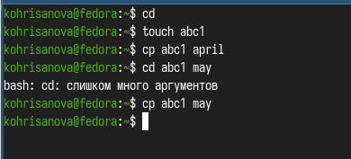
Выполнение примеров
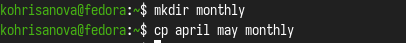
Выполнение примеров
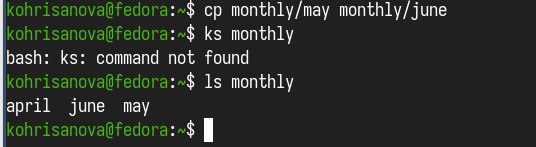
Выполнение примеров
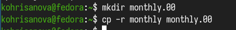
Выполнение примеров
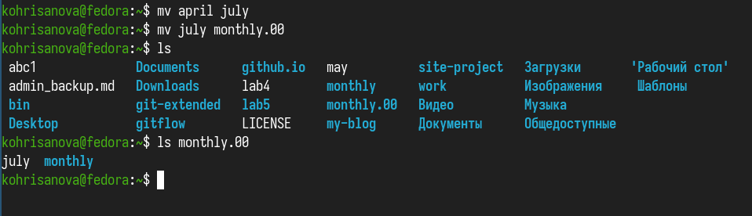
Выполнение примеров
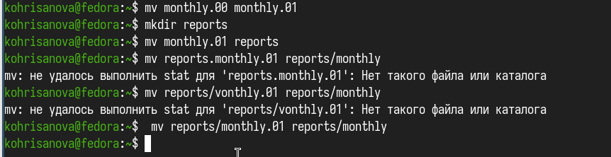
Выполнение примеров
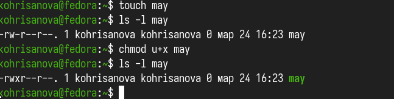
Выполнение примеров
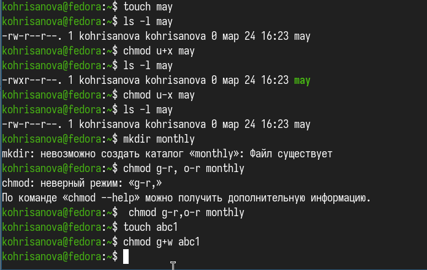
Выполнение примеров
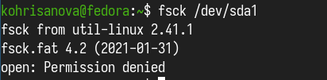
Выполнение примеров
В
домашнем каталоге создаем директорию ski.plases,перемещаем в него файл.
Переименовываем файл. После этого создаем в домашнем каталоге файл abc1
и копируем его в каталог ski.plases и переименовываем в equiplist2.
Создаем каталог с именем equipment в каталоге ski.plases. Перемещаем
файлы equiplist и equiplist2 в каталог equipment. Создаем и перемещаем
каталог newdir в каталог ski.plases и называем его plans.
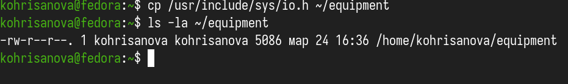
Работа с каталогами
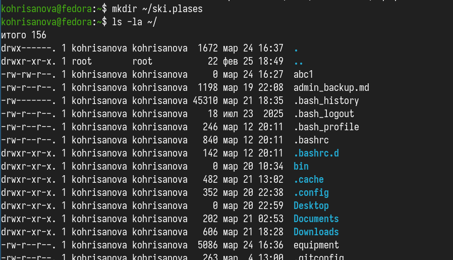
Работа с каталогами
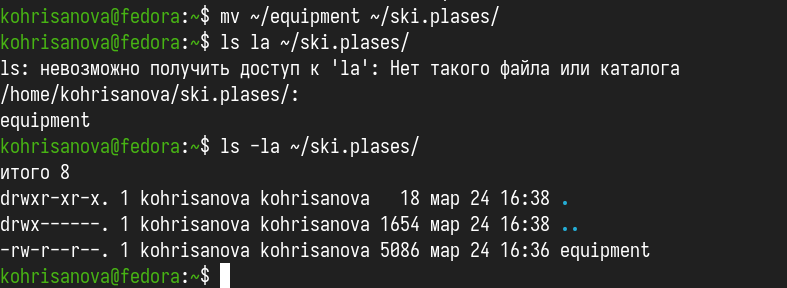
Работа с каталогами
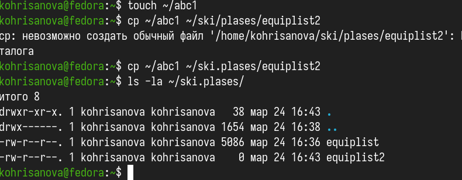
Работа с каталогами
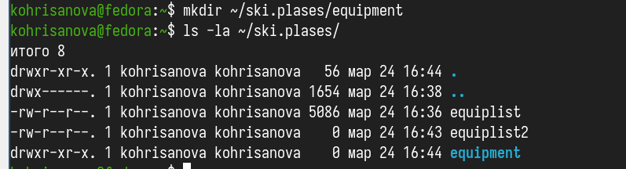
Работа с каталогами
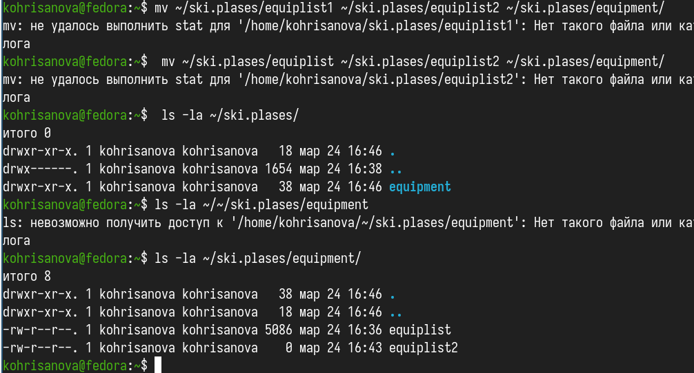
Работа с каталогами
Определим
опции команды chmod, необходимые для того, чтобы присвоить файлам из
хода работы нужные права доступа.
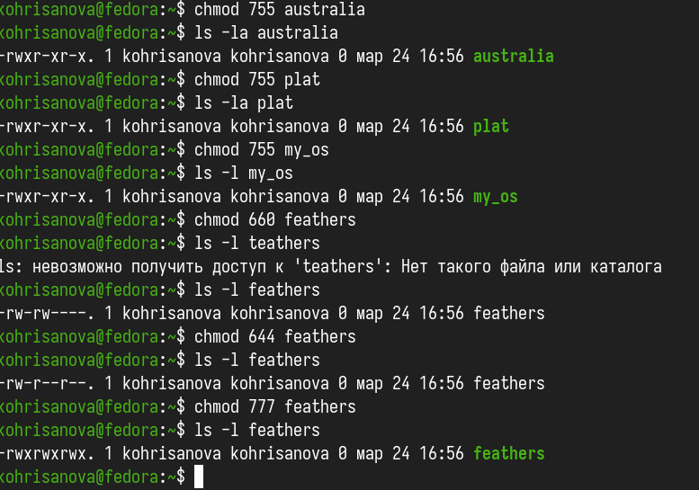
Настройка прав доступа
Просмотрим содержимое
файла /etc/passwd.
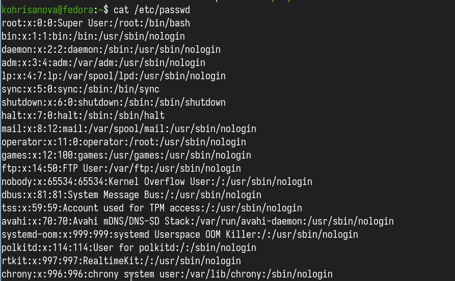
Файл /etc/passwd
Выполним
все указанные действия по перемещению файлов и каталогов
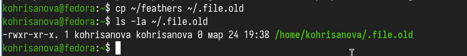
Работа с файлами и правами
доступа
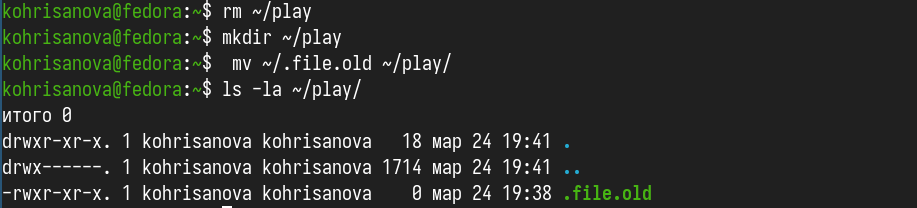
Работа с файлами и правами
доступа
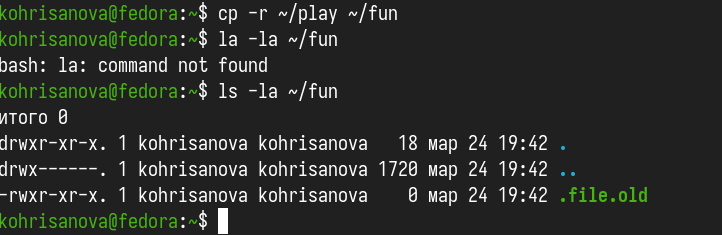
Работа с файлами и правами
доступа
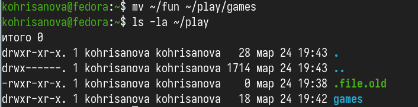
Работа с файлами и правами
доступа
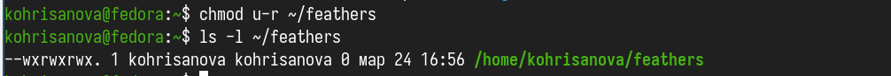
Работа с файлами и правами
доступа
Если
мы попытаемся просмотреть файл feathers командой cat или спироват его то
нам будет отказано в доступе.
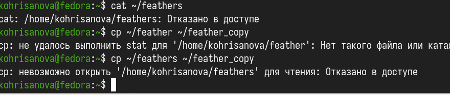
отказ в доступе
Прочитаем
man по командам mount, fsck, mkfs, kill и кратко их охарактеризуем,
приведя примеры.
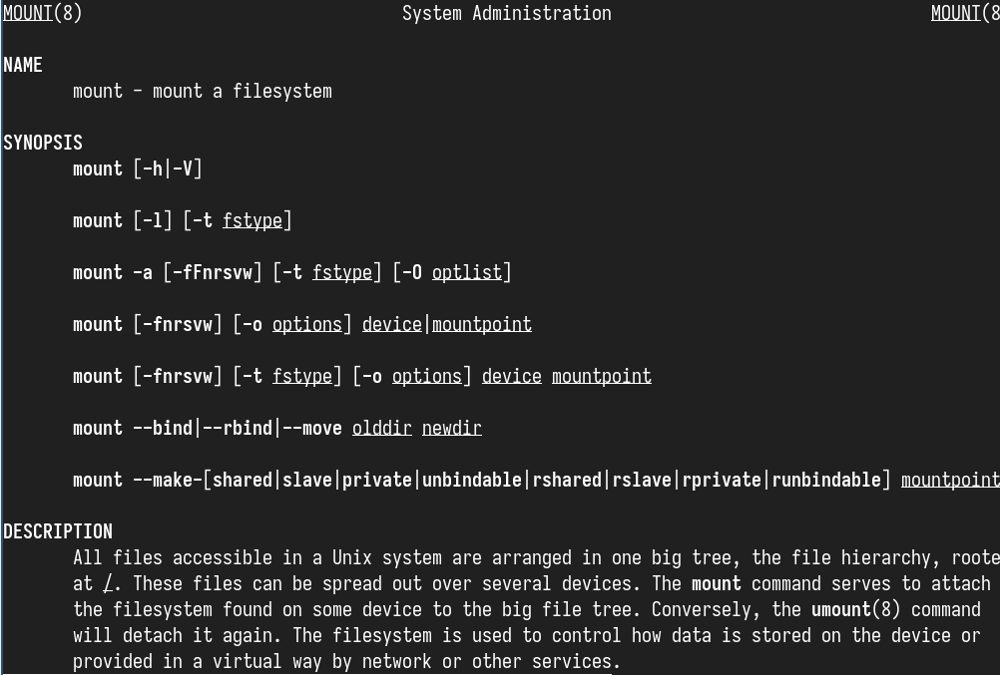
Команда mount
Монтирование
файловой системы к общему дереву каталогов. Для размонтирования
используется команда unmonnt.
fsck
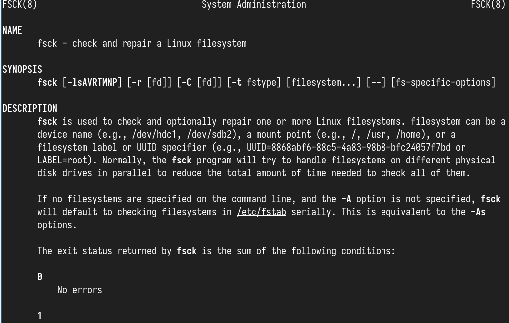
Команда fsck
mkfs
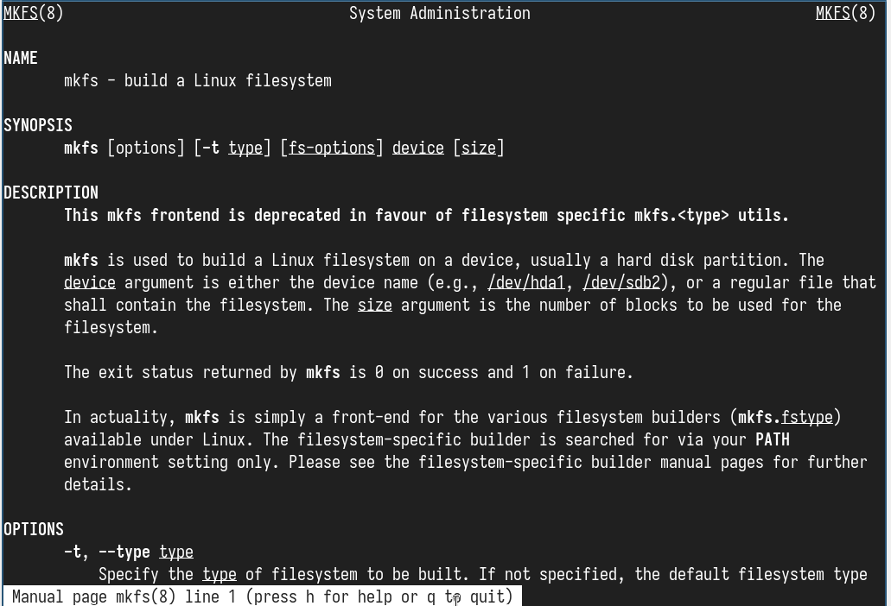
Команда mkfs
kill
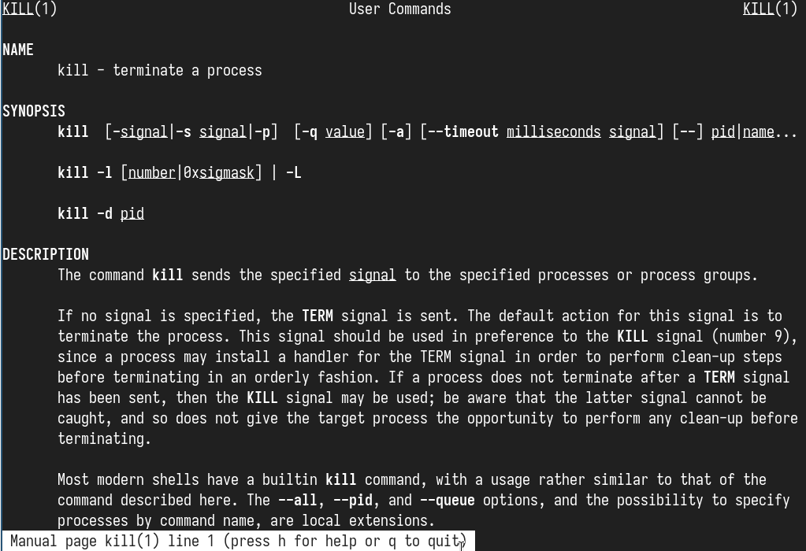
Команда kill
Вывод
В ходе данной работы мы ознакомились с файловой системой Linux, её
структурой, именами и содержанием каталогов. Научились совершать базовые
операции с файлами, управлять правами их доступа для пользователя и
групп. Ознакомились с Анализом файловой системы. А также получили
базовые навыки по проверке использования диска и обслуживанию файловой
системы.